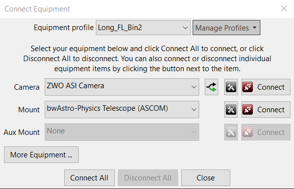
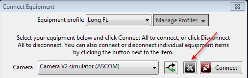
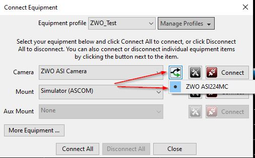
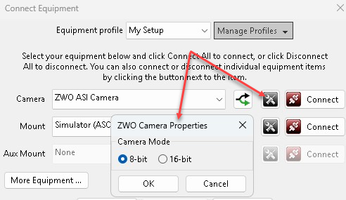
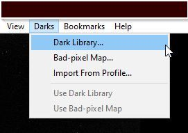
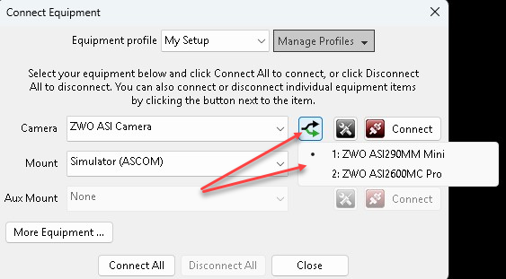
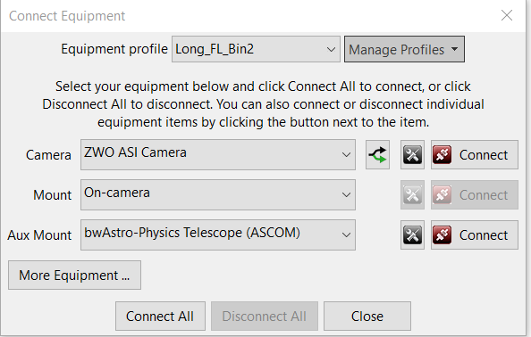
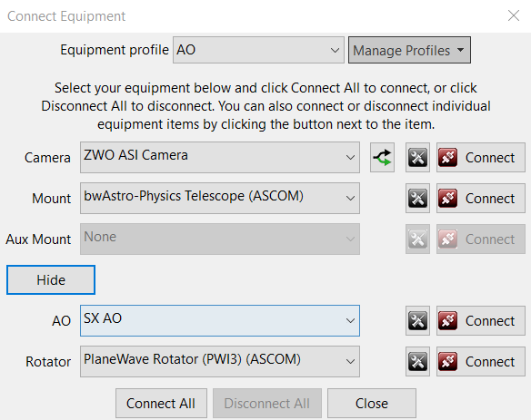

使用PHD2导星
开始导星的基本流程分为五步。
- 点击 USB 图标打开“连接设备”对话框，选择通过新配置向导创建的设备配置，然后连接相机和赤道仪。
- 在下拉列表中选择曝光时间。
- 点击循环曝光按钮，查看可用星点，必要时调整对焦。移动赤道仪或调整曝光时间，直到能持续看到可用星点。
- 点击“自动选星”图标，选择当前最合适的导星星点。
- 点击PHD2的“导星”按钮。
下面各节详细说明这些操作。
设备连接
开始导星之前，PHD2必须先连接硬件：导星相机、赤道仪，以及可选的辅助赤道仪、自适应光学 AO 设备和旋转器。点击 USB 图标后，会出现类似下面的对话框，具体设备信息可能不同。以下介绍各项选择。

设备配置
“连接设备”对话框顶部是设备配置管理控件。PHD2的所有导星设置，无论默认还是自定义，都会自动保存到设备配置中，包括标定数据和最近三次导星助手报告。唯一重要的例外是暗场库和坏像素图，它们保存为文件系统中的独立文件，但仍与各配置在逻辑上关联。如果只有一套导星设备，每次都使用相同相机和导星镜组合，只需一个配置。但也可能有多套设备，例如长焦距望远镜使用离轴导星，短焦距主镜使用独立导星镜和相机。这些设备需要的PHD2导星设置不同，应分别建立配置。对话框顶部控件可选择、新建、编辑或删除配置。选择配置并连接对应设备时，会自动恢复上次使用该配置时的全部设置。建立好所需配置后——可能只有一个默认配置——直接点击“连接全部”即可。如果已有合适的默认配置，只想按上次方式连接设备，可按住 Shift 点击主窗口的 USB 按钮，PHD2就会自动重新连接硬件。安装新版 PHD2 时，只要没有先卸载旧版，配置信息就会保留。几乎从来没有必要先卸载 PHD2，这只会增加麻烦，并不是有效的故障排查步骤。设备配置管理的更多说明见：管理设备配置
新配置向导
建立新配置的最佳方式是使用向导，对新用户来说，这也是关键的第一步。向导会依次显示多个页面，解释设置并帮助你作出选择，还会计算一组通常适合该设备的初始算法参数。与在“连接设备”对话框中手工填写相比，这样更快，也更不容易出错。第一次在电脑上运行 PHD2 时，向导会自动启动。以后可在“连接设备”对话框点击“管理配置”，选择“使用向导新建…”（New using wizard...）。
向导会询问一些对正确配置很重要的问题。每页说明应能解释需要填写什么、如何操作。下面还有一些补充提示：
1. 连接选项：选择各类设备时，通常会询问设备是否已经接好并可与 PHD2 通信。选择“是”后，PHD2 会尝试连接，并读取设备信息自动填写部分字段；选择“否”则需要手动填写。如果尝试连接失败，也仍可以手工填写并继续。向导中的设备连接主要是方便准确填写参数；如果 PHD2 已知某种设备无法提供有用信息，例如赤道仪选为“相机端口”（On-camera），就不会询问。
2. 相机连接页：未经合并的像素尺寸。如果在连接提示中选择“是”，通常会自动填入并禁用此字段；如果选“否”，或设备不报告像素尺寸，则需要手填。可以从相机规格表或厂家网站查到未经合并的像素尺寸。如果像素不是正方形，可以填写较大边长，也可以填写两边平均值。这不会影响实际导星结果，但能让 PHD2 知道图像比例，以便设置初始导星参数、检查标定是否合理、报告导星效果，并帮助支持论坛分析问题。
3. 相机连接页：像素合并级别。如果导星相机支持像素合并，可指定此设备配置采用的倍数。若同一套设备需要使用不同合并级别，最好为每种倍数分别建立配置。如果相机像素很小，同时焦距很长，“像素比例”字段旁可能出现警告图标，表示图像比例可能过小，应尽可能使用像素合并。
4. 相机连接页：导星镜焦距。这里容易填写错误，应仔细确认。正确数值不是导星镜口径，而是焦距。例如用 50 毫米寻星镜导星，焦距并非 50 毫米，通常更接近 150～175 毫米；60～80 毫米口径的折射导星镜，焦距通常约 240～500 毫米，而不是 60～80 毫米。如果使用主镜上的离轴导星器 OAG，则填写主镜焦距。如果导星相机前装有螺纹式小减焦镜，还应把减焦倍率计算在内。与像素尺寸一样，焦距无需极高精度，但应尽量准确，否则性能统计可能失真，初始导星参数也可能不合适。
5. 赤道仪连接页：赤道仪导星速率。这也是容易混淆的地方。导星速率是在赤道仪中或在 赤道仪驱动中设置的参数，,
并不由 PHD2 控制。PHD2 从不设置赤道仪导星速率，只读取它。它通常表示为恒星时速率的倍数，常用范围为 0.5～1 倍恒星时。虽然其他地方可能有不同说法，但通常应使用这个范围，而非低得多的速率。较高导星速率有助于更快消除回差，也可能克服静摩擦。如果在连接提示中选“是”，PHD2 会尝试读取当前速率；如果读取失败，就需要手动填写。PHD2 用它自动计算标定步长并检查标定结果，但实际导星本身不依赖所填写的速率信息。若赤经与赤纬的导星速率不同，应填写较大值。如果实在无法确定赤道仪中的设置，可保留默认 0.5 倍。本页还有一个复选框，询问赤道仪是否配备高精度编码器。这类设备有时用于昂贵的高精度赤道仪，拥有它的用户通常清楚自己的配置。多数用户应保持不勾选。
向导最后一页提供两个选项：一是每次载入配置时自动恢复 PHD2 标定；二是在保存新配置并结束向导后，立即建立暗场库。只有采用 ASCOM 或 INDI 赤道仪连接时，才显示第一项。它对固定台站尤其方便；如果能够确保每晚导星相机在接筒中的方向都保持不变，也可以启用。如果不确定，或不想关心相机朝向，就不要勾选。通常应选择建立暗场库，除非已经有兼容暗场库准备从其他配置导入。不过，如果需要修改相机位深等属性，例如 8 位或 16 位模式，必须先完成设置再建暗场库。以后也随时可以通过主窗口“暗场”菜单新建或修改暗场库。如果更换相机而又想保留旧相机的暗场库和坏像素图，应为新相机单独创建配置。在现有配置中改选相机，会使以前建立的暗场库和坏像素图失效。同一相机采用不同像素合并倍数时也一样：应放在不同配置中，因为暗场库和坏像素图依赖合并倍数。
相机选择
“相机”下拉列表包含PHD2原生支持的相机类型，以及电脑上已经安装的全部 ASCOM 相机。无论哪种方式，必须正确安装相机的操作系统驱动，PHD2 才能连接。如果采用 ASCOM 接口，还需安装对应的 ASCOM 相机驱动。列表中没有出现某款兼容 ASCOM 的相机，通常意味着尚未安装其 ASCOM 驱动。PHD2 不包含 ASCOM 驱动或操作系统驱动，需要自行查找、下载和安装。对于非 ASCOM 相机，PHD2 安装包包含使用它所需的应用程序开发库 SDK。有些相机同时提供 ASCOM 与原生接口，可以自由选择；两种接口可能以稍有不同的方式操作相机，或提供不同的相机属性。厂家经常更新驱动和 SDK，应关注并及时更新相机驱动。有时新版 PHD2 需要配套使用较新的相机驱动，也应留意这一点。
无法提供一个始终完整的 PHD2 相机支持清单。很多厂家扩展产品线时，只更新底层驱动，不必修改 PHD2 使用的应用库；除非用户报告问题，我们未必知道这些变化。因此，下面的列表应这样理解：
1. 如果完全没有列出某个厂家，其相机大概率不受支持，或只能通过网络摄像头接口使用。
2. 如果列出了具体相机型号，则通常受支持，除非厂家的驱动存在尚未解决的问题。
3. 如果没有列出某个新型号，但列出了同厂较早型号，则该相机很可能也受支持。
4. 如果相机使用 ASCOM 接口，则受支持。
PHD2 可以免费下载，最简单的办法是安装后查看相机下拉列表。也可以查看 PHD2 支持论坛相关 Wiki 中的相机支持信息：https://github.com/OpenPHDGuiding/phd2/wiki/CameraSupport
还可以在open-phd-guiding 论坛发帖询问其他用户的使用经验。访问论坛需要登录，建议建立账号，以便遇到导星问题时求助。
基本相机支持列表：
Windows：
- 兼容 ASCOM v5／v6 的相机
- Altair
- Atik 16 系列，彩色或黑白
- Atik Gen 3，彩色或黑白
- CCD-Labs Q-Guider
- Fishcamp Starfish
- iNova PLC-M
- MagZero MZ-5
- Meade DSI 系列 I～III，彩色和黑白
- OpenCV
- Orion StarShoot DSCI
- Orion Starshoot Autoguider
- Orion Starshoot Planetary Imager and Autoguider
- QHY 5-II
- QHY 5L-II
- SAC4-2
- SBIG
- SBIG 旋转器
- Starlight Xpress SXF／SXVF／Lodestar
- Svbony
- ToupTek
- 网络摄像头（LXUSB、并口、串口、OpenCV、WDM）
- ZWO ASI
Mac：
- Fishcamp Starfish
- KWIQGuider
- Meade DSI 系列 I～III，彩色和黑白
- Orion Starshoot Autoguider
- SBIG
- Starlight XPress SXV
- The Imaging Source（DCAM Firewire）
- ZWO ASI
导星相机通常通过 USB 线缆和电脑 USB 端口通信，这些部件可能因多种原因引起问题。便宜、劣质的 USB 线缆，即使是随相机附送的，内部导线也往往很细，容易损坏。连接器和线缆通常并非为户外设计，而天文拍摄恰恰是在户外进行。此外，从 Windows 10 开始，系统默认会在判断设备暂时空闲时挂起 USB 端口以节电。上述因素都可能干扰拍摄和导星，应提前了解并采取措施避免。遇到此类问题时，请按故障排查章节的说明处理：相机连接问题SBIG 双芯片相机支持
Santa Barbara Instrument Group（SBIG）的许多相机有两个传感器：一个主传感器用于拍摄，另一个较小的传感器用于导星。两者在物理上独立，但共用相机内部电子电路，更重要的是，共用到电脑的一条 USB 数据链路。因此，两个传感器的数据下载必须协调，主传感器下载图像时不能同时获取导星图像。此外，Windows 同一时刻只允许一个应用程序通过这条 USB 链路连接相机。这些是物理和架构限制，PHD2 无法绕过。不过，控制相机的拍摄软件可以提供一个接口，让 PHD2 从导星芯片取图，相当于不违反上述约束的“侧门”。这时拍摄软件负责协调两个传感器的访问。Sequence Generator Pro（SGP）就是提供这种功能的软件。如果以 SGP 作为主拍摄软件，可以使用它的“SGP API Guider”模块，让 PHD2 访问 SBIG 相机的导星芯片。
ASCOM 相机属性
选择 ASCOM 相机后，可以点击“连接”按钮左侧的属性按钮，打开该相机的 ASCOM 设置对话框：

视相机而定，这里可能提供一些不由 PHD2 直接控制的属性。
同时使用同厂多台相机
如果电脑同时连接同一厂家制造的多台相机，例如一台主相机和一台独立导星相机，通常需要明确指定 PHD2 应使用哪一台，避免连错。
为减少此类问题，建立设备配置时请按以下步骤操作：
- 确认相机驱动和 ASCOM 驱动均为最新版本。
- 运行配置向导前，确保电脑只接导星相机。如果导星相机原本接在主相机内置的 USB 集线端口上，应改为直接接电脑。
- 驱动安装正确时，向导第一步就能连接相机，并自动识别像素尺寸。
- 配置流程结束时，暂时不要立即建立暗场库。
- 向导结束后会返回设备连接对话框。先点击相机的“断开”，再点击分支选择按钮，见下图。即使列表中只有一台相机，也要明确选中它。这个条目通常包含多相机环境下用于准确识别设备的信息。

6. 点击“属性”，检查是否能选择 8 位或 16 位工作模式；如果可以，选择所需模式。不确定时，通常优先选择 16 位。

7. 在设备连接对话框点击“连接”以连接相机，然后点击“确定”。
8. 现在通过主窗口“暗场”菜单，为新配置中的导星相机建立暗场库；也可以从使用同一相机的其他配置导入。

某些厂家驱动不能始终保持连接到正确的相机，偶尔可能 在没有任何通知的情况下，从导星相机切换到主相机。如果 PHD2 警告传感器几何尺寸改变、需要重建暗场库，很可能是连到了主相机。应先检查这种“换相机”问题，不要直接重建暗场库。根因在相机驱动，PHD2 无法阻止。确认连接对象的一种方法是打开“统计”窗口并拍摄一些曝光，在表格中找到“图像尺寸”（Image size），检查是否与导星相机匹配。.
如果相机误切换问题持续存在，可以改用另一种组合：一台相机使用 ASCOM 驱动，另一台使用原生驱动。当然，需要确保 ASCOM 驱动也明确配置为正确的设备。无论采取哪种方法，都应使用最新相机驱动和最新 PHD2，必要时包括最新开发版。有些厂家频繁更新驱动和 SDK，却不总是照顾向后兼容性。
如果 PHD2 已经连错相机，可以点击设备连接对话框中的分支选择按钮，重新明确指定设备：

赤道仪选择
“赤道仪”下拉列表提供连接赤道仪的选项，通常有两种方式：
- 使用兼容 ASCOM 或 INDI 的望远镜驱动，通过串口线，或更常见的 USB 转串口连接发送导星命令。推荐采用这种方式，原因见下文。
- 使用赤道仪上兼容 ST-4 的导星端口，通过专用线缆以及相机或 Shoestring 适配器等中间设备发送命令。
其中，ASCOM 接口依赖第三方驱动与赤道仪通信。驱动可从 ASCOM 网站（ASCOM Standards）或赤道仪厂家获取，它们不随软件PHD2一同提供。因此，下拉列表只显示当前电脑上已经安装的 ASCOM 驱动。如果列表中没有你的赤道仪，可能是驱动未正确安装，也可能设备只支持 ST-4 导星。ASCOM 驱动必须支持“PulseGuide”接口；多年来这一直是 ASCOM 兼容要求，已广泛支持。采用这种方式时，导星命令从PHD2经串行接口发送给赤道仪。较高层次的PHD2命令，例如“向西移动 500 毫秒”，由赤道仪固件转换成相应的电机控制信号。通过 ASCOM 接口，PHD2还能获取望远镜指向，尤其是赤纬和支柱侧别。这些信息用于调整标定，显著提升使用便利性。
“导星端口”接口使用大多数赤道仪具备的专用硬件控制端口。采用这种接口时，PHD2与赤道仪之间还必须有一个中间设备：
- 带兼容 ST-4 相机导星接口的导星相机。此类连接应把赤道仪选项设为“相机端口”（On-camera）。
- 任意受支持的 Shoestring GP-xxx 设备。
- 带导星端口接口的受支持 AO 设备。
采用这种接口时，PHD2的“向西移动 500 毫秒”等命令，由相机、Shoestring 适配器或 AO 等中间设备转换为电信号，让赤道仪电机运行相应时长。
辅助赤道仪选择
如果“赤道仪”连接必须采用 ST-4，PHD2 就无法通过该接口获取望远镜指向。因此，标定无法自动按赤纬补偿，也无法在支柱侧别变化时自动翻转。可以另外指定“辅助赤道仪”（Aux mount）连接，仅用来获取指向信息，以恢复这些功能。示例如下：

Windows 用户可为辅助赤道仪选择任意兼容的 ASCOM 驱动，Linux 用户则可使用 INDI 驱动。只有主赤道仪接口不能返回指向信息时，辅助连接才会使用，否则会被忽略。注意，某些赤道仪，例如 Celestron 和 iOptron，机身上也有标为“Aux”的硬件端口；不要将其用于导星，它与 PHD2 的辅助连接完全不是一回事。辅助赤道仪列表最后一项是“询问坐标”（Ask for coordinates）。无法通过 ASCOM 或 INDI 连接时，它可以提供基本的辅助指向信息功能。需要使用时，请参阅：询问坐标.
多数 ASCOM 赤道仪驱动使用串行接口，因此需要指定 Windows 的一个 COM 端口。现代电脑大多不带实体串口，可以使用 USB 端口加 USB 转串口适配器；较新赤道仪可能随附或内置适配器。适配器的软件会创建虚拟 COM 端口，ASCOM 驱动应使用该端口。首次通过 ASCOM 连接赤道仪或辅助赤道仪时，需要在驱动设置中指定 COM 端口。点击上图“连接”左侧的属性图标即可快速打开设置窗口。完成后，COM 端口会随设备配置保存。
使用 ASCOM 或 INDI 连接的优点
在 Windows 上，通常优先通过 ASCOM 连接赤道仪进行导星；其他操作系统上，如果有 INDI 支持，通常应优先采用 INDI。这可能与某些旧经验、网上说法或导星相机厂家的建议不同，但对 PHD2 而言，这种方式的好处很明显。除非有明确可靠的理由不用，否则应优先选择。主要优点包括：
- 显著减少标定次数。更换目标不再需要重新标定，因为 PHD2 知道望远镜指向，可自动调整导星标定。多数用户取得一次良好标定后，就能反复使用，直到硬件发生变化。
- 中天翻转时自动调整，无需记住手动翻转标定数据。
- 针对天空中不同赤纬的目标，自动调整赤经标定，即赤纬补偿。
- 消除 ST-4 导星线这个故障点。这类故障出乎意料地常见，因为线缆容易损坏，也容易与外形相似的线缆，例如电话线，混淆。
- 减少一条会随望远镜移动、可能缠住、拖拽或卡住的线缆。
- 让 PHD2 更好地检查标定是否合理，及时警告潜在问题，避免白白浪费数小时拍摄时间。
- 提供更好的诊断与排障信息，求助时尤其有用。
- 漂移法对极轴时可使用望远镜转向功能，进一步加快对准过程。
网上论坛有时会误称 ST-4 是纯硬件导星，因此更准确或高效。对于如今常见的现代赤道仪，这已不成立：与 ASCOM 导星一样，线缆两端实际上都有软件参与。只要赤道仪有可用的 ASCOM 或 INDI 驱动，通常就应优先使用。自适应光学与旋转器选择
通过PHD2可以选用 Starlight Xpress 自适应光学设备和／或兼容 ASCOM 的相机旋转器。点击上述对话框的“更多设备…”按钮即可指定：

没有这些设备时，保持“无”（None）即可。连接后，“高级设置”对话框会增加相应选项卡，用于设置设备属性。自适应光学设备通常需要先学习其工作方式，再尝试使用。相关背景说明见：使用 AO .
PHD2 不控制旋转器转动，而是读取其当前角度，必要时调整导星标定。旋转器用于控制主相机相对于天空的方向，例如使中天翻转前后构图一致，或优化目标在视场中的布局。如果旋转器位于离轴导星组件中，转动会影响 PHD2 标定。这种情况下应把 PHD2 连接到旋转器，以便自动调整标定。
旋转器位置由拍摄软件控制，通常用于目标构图。PHD2 要根据旋转器角度自动调整标定，就必须像其他使用旋转器的软件一样，正确理解旋转方向。默认假定它符合 ASCOM 标准，但实际设备未必如此，所以高级设置的旋转器选项中提供“角度反向”参数。多数其他软件也有类似选项，因此必须有条理地调整，确保所有软件对方向的理解一致。通常最好从驱动开始，逐层检查：- 1. 查阅旋转器驱动或控制软件的说明，确认是否有“反向”选项。如有，选定所需设置后，不要再随意改变。
- 2. 手动运行 PHD2，连接包括旋转器在内的设备，转向有星点的视场，把旋转器设为 0°，完成 PHD2 标定并导星，直到稳定。停止导星，再通过旋转器软件转动 45°，方向不限。
- 3. 重新开始导星，检查是否正常；初次有一半可能已经正确。如果修正方向错误：
- a. 停止导星。
- b. 在 PHD2 的“高级设置／其他设备”中，更改“反转角度符号”（Reverse sign of angle）。
- c. 重新标定 PHD2。
- d. 重新开始导星并等待稳定。
- e. 停止导星，将旋转器再次转到新角度，然后重新导星；此时应当正常。
- 4. 导星已能正确响应旋转器位置变化后，保持 PHD2 的“反转角度符号”设置不变。.
- 5. 接入自动拍摄软件并重复测试。保持前面已经确认的设置，只在必要时调整拍摄软件自身的“角度反向”选项。
模拟器
所有PHD2设备类型，包括相机、赤道仪、AO 和旋转器，都有内置模拟器。不要把它们与电脑上可能安装的 ASCOM 模拟器混淆，后者名称中带有“ASCOM”。虽然 PHD2 能连接 ASCOM 模拟器，但它们不会提供标定和导星所需的完整反馈，所以只适合有限的测试与试验。内置模拟器则可以用来了解PHD2的工作方式，熟悉如何使用程序。使用内置设备模拟器时，几乎所有PHD2功能，包括完整标定和全部图形显示，都能正常运行。模拟导星表现也相当逼真，有助于了解实地操作时会看到什么。开始使用时，运行新配置向导，相机选择“Simulator”，赤道仪选择“On-camera”。
请记住，模拟器不能排查真实赤道仪的问题，也不能测试实际硬件。要诊断设备问题、完成真实标定并让设备正常工作，相机和赤道仪都必须是真实设备。模拟器表现虽然逼真，本质上仍是虚拟行为。它有时可用于重现 PHD2 应用程序问题，但不能诊断实际导星硬件。
曝光时间与选星
导星星点是在循环曝光期间选择的。最佳方式是让 PHD2自动选择：点击主窗口“自动选星”图标即可。它综合考虑是否饱和、是否为真实星点、与其他恒星和视场边缘的距离等因素，几乎总能比手动选择更好。“自动选星”也是使用多星导星的唯一方式。不使用自动功能时，可以直接点击一个候选星点，但这样只能单星导星。选中后，星点周围会出现绿色方框。如果选择了过亮、已经饱和的恒星，状态栏会显示红色“SAT”，此时应改选更暗的星。把伽马滑块向左移动，可以看见更暗的星。很多新用户会被显示效果误导，选择视场中最亮的恒星，而它往往已饱和，并不适合自动导星。换句话说，如果亮到你知道它的名字，那几乎肯定不适合作为导星星。使用自动选星可以避开这些陷阱。曝光时间取决于设备、天空条件和可用星点，它会产生以下影响：
- 影响所选星点的信号强度，即亮度。未饱和的前提下，星点越亮，越容易从背景中分辨，通常导星效果越好。
- 决定向赤道仪发送修正命令的频率；每个曝光周期最多只能发送一次导星修正。有些赤道仪需要频繁的小幅调整，有些则不需要，可能需要试验才能找到适合自己设备的方式。
- 显著影响导星算法对视宁度的敏感性。把曝光延长至 2～4 秒，可以平滑视宁度造成的变化，长焦距导星时尤其明显。但长曝光的优势必须与足够频繁修正赤道仪误差的需求平衡。如果赤经高频误差较多，可能需要 1 秒甚至 0.5 秒曝光，此时多星导星更加重要。如果不了解天文视宁度，可以参阅：天文视宁度
起步时可尝试 1～3 秒曝光。如果想取消当前选星而不选择另一颗，可以按住 Shift 点击图像窗口任意位置。初次调试设备时，务必认真对焦导星相机。可以使用星点轮廓工具，或熟悉的其他工具，例如对焦罩、SharpCap 等相机软件。只靠肉眼判断通常难以获得良好结果。小型导星镜，尤其寻星镜式导星镜，对很小的对焦调整也可能非常敏感。值得花时间精确对焦，因为失焦星点会导致较差的导星效果。
曝光控件提供多种预设时间。低于 0.5 秒的曝光主要供自适应光学设备或其他特殊用途使用，不推荐普通导星配置采用。列表底部还有“自定义”选项，可填写未列出的曝光时间，它同样主要面向特殊用途，例如需要异常长曝光的情况。
还可以选择“自动”曝光。PHD2 会在用户设定的时间上下限内调整曝光，使选定导星星点维持相对稳定的 SNR。这里的 SNR 是 PHD2 用来衡量星点与背景区分程度的专用指标，与测光中的信噪比相似但不完全相同。自动曝光适用于自动拍摄，以及希望尽量缩短曝光而不丢星的 AO 用户。自动拍摄需要在转向后无人值守地选择导星星点；找不到足够亮的星点就可能导致流程失败，此时长一些的曝光通常好过完全找不到导星星。自动曝光参数位于高级设置对话框的相机选项卡中。
多星导星与选星
大多数导星配置都能从多星导星中受益。它使用多颗恒星星点质心的加权平均位置，而不是仅用单颗星点质心。高级设置对话框的导星选项卡中有一个默认勾选的复选框，用于启用多星导星。启用后，自动选星会在视场内识别最多 20 颗大小和 SNR 合适的候选星点。任一时刻最多使用其中 9 颗，其余作为备用，替换丢失或被拒绝的辅助星。主星是最优的单颗候选星，也就是关闭多星导星时会选中的那颗。导星过程中，一些辅助星可能因过暗或漂出视场而被剔除，无需担心，算法会自动管理。启用多星导星时，图像中主星仍显示常规方框，辅助星则用圆圈标出。界面其他与导星星点相关的属性，例如亮度、SNR 和 FWHM，均针对主星，而不是整个星点列表。导星过程中可以启停多星功能，但启用会强制重新执行自动选星。多星算法利用辅助星改进位移测量并降低波动，因此与单星导星相比，基本不会降低导星性能。总体收益取决于图像比例、恒星和天空背景亮度、星点大小、对焦、镜筒内气流以及相机噪声等因素。鉴于算法的实现方式，最好的做法是实际试用，再自行判断效果。注意：如果不使用自动选星，而是手动点击选择导星星点，多星导星不会生效。
自多星选星与导星功能推出后，有用户希望根据屏幕显示手动覆盖自动选择。这些请求没有采纳，因为它们会破坏多星算法的数学基础，更重要的是，往往会使结果变差。算法依据的基本原则是：星点质心计算，也就是确定恒星在传感器上位置的准确度，与该星点的 SNR 成正比；它不由外观形状、在传感器上的位置、离边缘远近或其他视觉特征决定。算法始终在用户定义的星点判定条件内选择 SNR 最高的一组。Min-HFD 和 Max-HFD 指定可接受星点尺寸的范围，用来区分真实候选星点与传感器噪声、内部反射或靠得很近的双星。第三个参数 Saturation ADU 指定候选星点峰值亮度上限，通常为导星相机输出的最大 ADU。算法尽量避开饱和星，只有没有其他可用候选时才接受它。正确设置这几个参数，是用户获得最佳导星星点组合最重要的工作。可用星点轮廓工具或导星日志，观察当前导星设备与视宁度条件下典型星点大小，确定最小和最大 HFD。设置后，除非设备或大气条件显著改变，否则通常无需调整。
用户常会被屏幕效果误导，觉得手动选星更好。实际上，最主要的问题是许多看起来“漂亮”的亮星已经饱和；其次，某些亮点只是热像素或暖像素，在图像降采样和伽马拉伸后看起来像恒星。暗场库和坏像素图都不能完全消除这些伪影。因此，仅凭屏幕外观点击亮点，效果通常不如自动选星采用的定量、系统化方法。当然，仍可手动选择导星星点，但这样无法使用多星导星。如果对自动选星有疑问，调试日志会为每次自动查找记录详细清单，包括画面中每个候选对象的位置、属性，以及它为何被纳入或排除出最终可用星点列表。
自动标定
常规赤道仪
导星标定时，PHD2需要测量两件事：
- 相机传感器相对于赤道仪及天空赤经、赤纬轴的方向角。
- 使望远镜移动指定距离所需的导星脉冲时长。
PHD2会自动发送导星脉冲，观察相邻图像中星点移动的距离和方向，从而完成测量。选星后点击“导星”图标，流程随即开始。原始星点位置会显示黄色十字线，PHD2 向各方向移动赤道仪，测量星点移动与发出命令之间的关系。状态栏会显示正在发送的命令，以及星点相对初始位置的累计位移。PHD2会分别测量两轴，先东西方向，再南北方向。PHD2通常让星点在每个方向移动约 25 像素，以获得准确标定。完成后十字线变绿，并自动开始导星。标定是测量过程，会受赤道仪和大气因素影响，因此最佳位置是距天赤道，即赤纬 0°，不超过约 20°，并高于最近的东西地平线至少 60°，也就是距中天不超过约 2 小时时角。如果场地条件限制，也可在其他位置标定，但测量不确定性会增加。你不能在非常靠近南北天极的位置标定，而且赤道仪必须以恒星时速率跟踪。如果 标定遇到困难，应立即改用 标定助手 .
虽然 PHD2 会向四个方向移动星点，但只有向西和向北的运动用于计算导星速率和相机方向角。向东和向南只用于把星点大致移回原位。向北移动前，会先发送一组消除回差的脉冲。PHD2 采取适度的回差清除策略，观察是否出现连续、同向且不反转的位移模式。如果赤纬回差很大，或在长焦距、差视宁度下导星，这个阶段可能不能完全消除回差。避免此问题的最佳办法是使用标定助手。你也可能看到向南脉冲结束后，星点仍离原位很远，这是赤纬回差明显的另一迹象，但并不意味着标定无效。如果怀疑存在较大回差，可运行导星助手直接测量。
大多数情况下，标定会自动完成，无需人工干预，使用标定助手时尤其如此。如果向西或向北的移动量不足，会出现警告，说明标定已经失败。这种失败并不常见，可能是某个硬件部分没有正常工作，例如导星线损坏，也可能是没有遵循标定助手的全部建议。
如果赤道仪或辅助赤道仪通过 ASCOM／INDI 连接，一次良好标定可以长期复用，这也是推荐的使用方式。这类连接让 PHD2 知道望远镜指向，因此在天空某处完成的标定会随目标转向自动调整。只要能获取指向信息，就不必再遵循“每次转向或换支柱侧别都要重新标定”的旧习惯。在这种配置下，通常只有导星相机旋转超过几度，或硬件配置发生其他重大变化，才需要重新标定。如果建立配置时选择了“自动恢复标定”，或在高级设置的导星选项卡启用了它，那么连接设备、自动选星后即可立即开始导星。初学者可能更适合每晚开始时重新标定，以提高成功率。若设备配置包含旋转器，PHD2 还可以通过旋转器连接，根据导星相机角度调整标定，进一步减少重新标定的需要。
随时可以在“工具”菜单选择“查看标定数据”（Review Calibration Data），检查上次标定结果。对话框会用图形显示赤道仪运动，并列出计算得到的导星参数。详情见帮助中的标定详情章节。快速质量检查时，应确认：一，赤经与赤纬轨迹大致垂直；二，各测量点大致沿直线排列，没有明显弯曲、折弯、成团或方向反转。如果出现这些异常形态，通常应重新标定。即使高端赤道仪，也可能因环境因素，尤其阵风和差视宁度，偶尔产生不良标定。
标定完成后，PHD2 会对结果进行合理性检查，确认计算结果至少在基本层面合理。如果不合理，主窗口顶部会显示提示，说明相关情况。可以忽略，也可以点击“详情”查看更多信息。一般应认真处理这些警告，因为使用明显错误的标定继续导星没有意义。
自适应光学设备
使用 AO 时，实际需要完成两次标定。第一步标定 AO 内部的倾斜光学元件，计算其调整幅度、方向与星点位移的对应关系；第二步是前面介绍的赤道仪标定，用于确定发送给赤道仪的导星命令。当星点偏移超出 AO 单独能够修正的范围时，会发出这些称为回中（bump）的命令。
导星
开始导星后，状态栏会显示诊断信息，说明正在向赤道仪发送哪些修正命令。PHD2会持续导星，直到点击“停止”图标。恢复时，只需重新循环曝光、自动选星并点击“导星”，不必为此重复标定。
某些情况下，PHD2可能丢失导星星点，此时会以提示音和闪烁的橙色十字线提醒。可能原因包括：
- 云、天文台屋顶、树木等遮住了星点。
- 赤道仪、相机或线缆系统发生位移，使星点突然移出跟踪框；线缆绊住就可能造成这种情况。
- 星点因其他原因“消失”，例如本来过暗、相机对焦不佳，或星点大小和亮度在接受阈值上下波动。
- 亮度波动足以触发星点光通量检测。如果频繁发生，应在“高级设置／导星”中关闭此功能。
显然，需要查明并修复根本原因。还要理解，PHD2此时不会主动移动望远镜去寻找丢失的恒星，而只会继续曝光，等待星点重新出现在当前跟踪框内。如果长时间丢星，赤道仪可能明显偏离目标。之后跟踪框中重新出现的恒星很可能已经不是原来那颗，拍摄目标也不再正确居中。无人值守拍摄时，应由拍摄软件在星点恢复后重新定位构图，PHD2 无法完成这项工作。偶尔或短暂丢星通常不会造成糟糕导星或毁掉照片，但持续丢星会使赤道仪长时间得不到修正，从而影响图像质量。
刚开始导星时，如果没有使用暗场库或坏像素图，窗口顶部可能出现警告。可以忽略并继续，但花几分钟建立暗场库供以后使用，通常会得到更好的结果。
如果使用的是德式赤道仪（GEM），目标越过中天附近时通常需要进行“中天翻转”。也就是由你或拍摄软件将望远镜转到支柱另一侧，再继续拍摄。这通常会反转赤纬方向，使原始标定不再直接适用。如果使用 ASCOM 赤道仪或辅助赤道仪接口，标定会自动调整，只要没有同时旋转相机或调焦座，就可以直接恢复导星。如果接口不提供指向信息，则需要自行调整标定。可以在当前支柱侧重新标定，通常只需几分钟；也可以在“工具／修改标定”中选择“立即翻转标定”，随后直接恢复导星。注意：如果 PHD2 使用 ASCOM 或辅助赤道仪连接，“翻转标定数据”操作不会产生作用。
有时需要强制重新标定，例如处理线缆问题时旋转了导星相机。可以点击“大脑”按钮，在“导星”选项卡勾选“清除赤道仪标定”；也可以直接按住 Shift 点击主窗口的“导星”按钮，PHD2就会开始重新标定。
开始导星后，你通常会想了解运行状况。虽然可以观察导星图像中的星点，但很多细小修正肉眼难以看见。PHD2 提供了多种测量与显示导星效果的工具，详见监测工具章节。若干导星算法会限制单次命令允许的最大修正量。如果上限小于修正赤道仪位置实际所需的幅度，主窗口顶部会显示警告。如果问题反复出现，而你又没有将最大移动参数调低到默认值以下，那么根源很可能在赤道仪本身。